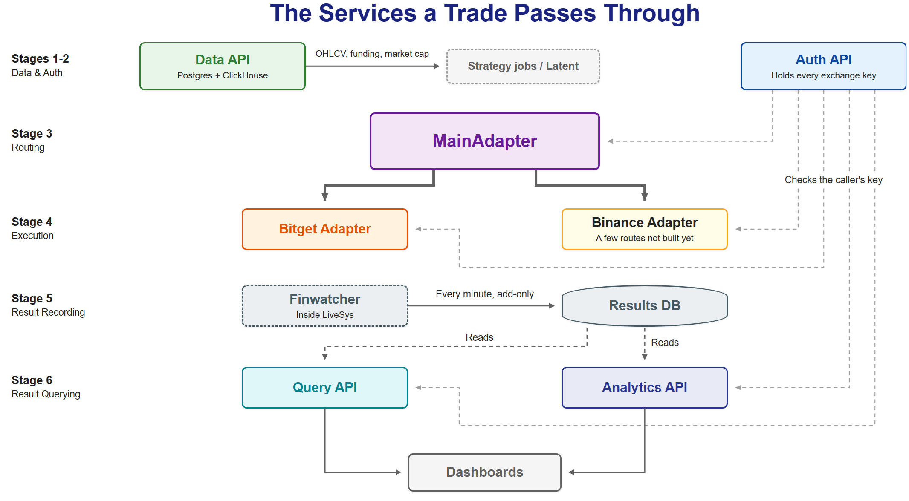
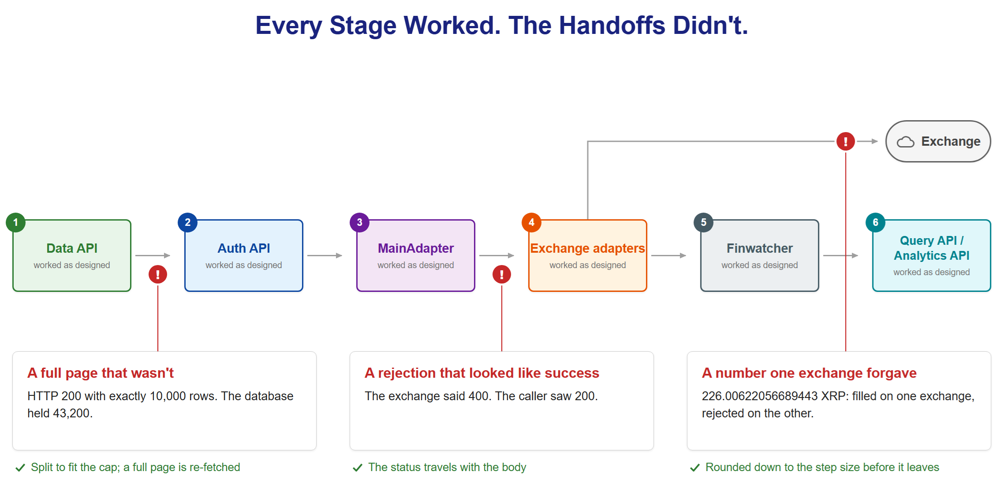

Both US sprint relays dropped the baton in Beijing in 2008. A trade in our system is a six-stage relay, and every failure in this post happened at a handoff.
On August 21, 2008, in the Olympic heats in Beijing, the US men's 4x100m relay team dropped the baton as Darvis Patton handed it to Tyson Gay. Later that day the US women's team dropped theirs on the final exchange. Neither team reached the final.
A trade in our system is a relay too: six stages, each owned by one service, from market data to the number on a dashboard. We built every stage to do one job and do it well. The failures in this post all happened between stages.
A baton pass during a relay race at Kincaid Field, sometime in the first two decades of the twentieth century. Photo: University of Oregon Libraries, via Wikimedia Commons, public domain.

Six Stages, Eight Services
Every trade on our platform reaches the outside world through one layer: the trading API layer. LiveSys, our live trading engine, and Compositor, the core that runs it in production today, place their orders through it. Latent, our backtest engine, reads its market data from it.
No single service in that layer does the whole job of "place a trade and record what happened." Market data, exchange key custody, order routing, order execution and result recording each belong to a separate service. Eight services do the work across six stages: the execution stage has one adapter per exchange, and the last stage is two read-only query services. One of them, Auth API, is a single point of failure on purpose, and we'll get to why.

Stage 1: Data API, Where the Trade Starts
Before any order exists, something has to decide what the order should be, and that decision runs on market data. Data API is the one service that supplies it: candles, funding rates, market cap, order books down to tick level and the rest of the market data we use, for Bitget and Binance, plus funding rates for Hyperliquid. It's a Go API (Gin and GORM) over Postgres, with ClickHouse holding the heaviest data (tick-level order books, one-second bars, liquidations), and Python collectors feeding both.
The strategy jobs that compute target weights read it, and so does Latent, the backtest engine, so a strategy sees the same history in a backtest that it sees live. Analytics API reads the same market database directly for its benchmark prices. A strategy is judged against the market it traded in, so the benchmark has to come from the same numbers the strategy saw.
This first stage is also where the first dropped baton was. A request for thirty days of one-minute data came back with HTTP 200 and exactly 10,000 rows. The database held 43,200. The endpoint allowed 10,000 rows for each requested symbol but spent that allowance across the whole request in alphabetical symbol order, so with several symbols the first ones could use up the budget and the rest came back empty, which looks exactly like a symbol with no data. Seventy-seven percent of the requested rows were missing, behind a success response.
Our first move was to ask for the API to fail loudly when a request was too big. Then we withdrew the request. A cap that returns what fits is a normal contract, and paging is the caller's job. The caller was ours: the backtest engine split long requests by calendar month, not by how many rows the cap allows. The fix went on our side of the handoff. Requests are now split to fit the cap, and a page that comes back exactly at the cap is treated as cut off and fetched again in halves.
Chunk sizes worked out from the cap are the first line of defense and that check is the second. A forty-day open-interest request came to 11,520 rows, over the cap, so without the guard 13% of it would have vanished silently. If a request can't be split small enough, the fetch aborts instead of returning less. A test feeds the splitter a stand-in endpoint that silently cuts at the cap and asserts that a full month of one-minute rows comes back with no duplicates. The API itself still gives no sign that a response was cut off, so the caller has to infer it from the row count. LiveSys had been splitting its own requests to fit the cap all along, so live trading wasn't affected.
Stage 2: Nothing Moves Without Auth API
Auth API sits in front of the credentials database. It's a FastAPI service, and it is the only place in the system that holds exchange API keys. An exchange adapter asks it for the user's key right before it signs an order.
Every request to MainAdapter or to an exchange adapter is checked against Auth API, with no caching. Query API and Analytics API, which only read results, remember a successful check for three minutes and one minute. LiveSys's own API checks every call, and its trading jobs carry the user's key down to MainAdapter, where it's checked again. The read services cache because one fund screen fires five Query API calls and ten Auth checks, and only successful checks are remembered, so a failure is never replayed. The price is that a revoked key stops an order on its very next request but can keep a result view open for three minutes at most.
Keeping the keys in one place is a deliberate trade-off: exchange keys live in one database and nowhere else. The post on LiveSys explains why that's worth it and what happens when Auth API goes down, real incident included. The short version: when Auth API is down the system fails closed, and no trade executes anywhere until it is healthy again.
Stage 3: MainAdapter, the Only Door to an Exchange
Once a request is authorized, the order still has to go somewhere. That somewhere is always MainAdapter, a FastAPI service that every order passes through no matter which exchange it's headed for. No other service in our code calls Bitget or Binance directly. LiveSys calls MainAdapter to place orders, and Query API calls it to read live balances and positions.
MainAdapter also does the tedious part nobody above it should have to think about. Bitget and Binance return the same information in different shapes, so MainAdapter uses Bitget's shape as the standard and translates Binance's responses, and some of its requests, into it. The services above never learn that the two exchanges disagree about the format.
# MainAdapter, illustrative shape (not literal source)
ADAPTER_BY_EXCHANGE = {
"bitget": "<Bitget Adapter URL>",
"binance": "<Binance Adapter URL>",
}
async def forward(exchange: str, path: str, body: dict) -> JSONResponse:
resp = await client.post(f"{ADAPTER_BY_EXCHANGE[exchange]}{path}", json=body)
# keep the exchange's verdict: a 400 from the exchange stays a 400
return JSONResponse(status_code=resp.status_code,
content=normalize(exchange, resp.json()))We trade on Bitget today. MainAdapter already routes to Binance, and a few of its routes still have no Binance counterpart.
The comment in that sketch is there because of the second dropped baton. An early version of the forwarding function returned only the response body and threw away the HTTP status code. An exchange rejecting an order with a 400 arrived at every caller looking exactly like a 200. LiveSys tells "this order was rejected for a normal reason, skip it" apart from "something broke, stop" by checking that status, so routine rejections, like an order below the exchange's minimum size, turned into hard failures with an alert instead of a skip. The bug sat in the code for nearly three weeks. It first showed up as an intermittent KeyError in a smoke test, and the cause surfaced when the same call made directly to an exchange adapter and through MainAdapter came back as 400 in one case and 200 in the other. The fix changed the function's return type from a bare body to a status and a body, sent on as a real HTTP response that keeps its status, with a test that a 400 from the exchange arrives as a 400.
It's also why Compositor didn't need a routing layer of its own. Its code never branches on the exchange name. The name is a string stored with each account and passed down to the order layer, and MainAdapter takes it from there unmodified.
Stage 4: Bitget Adapter and Binance Adapter, Where the Order Lands
Below MainAdapter sit the two services that place the order on the exchange. Bitget Adapter wraps Bitget's official Python SDK. Binance Adapter uses a small signing client we wrote ourselves. In our code, each has exactly one caller: MainAdapter. No dashboard, no strategy job and no analytics service talks to them directly.
That split keeps two kinds of knowledge apart. MainAdapter is the one place that decides which exchange an order goes to. Each adapter is the one place that knows what its exchange expects a request to look like. Supporting a third exchange means writing one more adapter behind the same door.
"What the exchange expects" turned out to include the number of decimal places, which brought the third dropped baton. In a test on Binance's demo environment, LiveSys sent a closing order for 226.00622056689443 XRP, the raw result of a floating-point division. Bitget accepted orders like that, so on Bitget nobody had noticed. Binance rejected it with error -1111, "Precision is over the maximum defined for this asset." A position that was supposed to shrink didn't. It surfaced in the fourth round of running demo-account sessions against Binance, where each round exposed one more gap.
The fix lives in the Binance adapter. The place-order path rounds the quantity down to the symbol's allowed step size before it's sent, in exact decimal arithmetic, with each symbol's step size cached for ten minutes. If the exchange answers the step-size lookup with an error, the original quantity goes through unchanged and the exchange is left to reject it loudly. We would rather see a rejection than send a guess. The same quantity can be invisible on one exchange and fatal on another, and that's the strongest argument we have for giving each exchange its own adapter.
Stage 5: Finwatcher Records What Happened
The order call in Stage 4 gets back an acknowledgment: the exchange has accepted the order. Binance's futures endpoint answers with an ACK by default, and Bitget's returns only the order ID. That is not a fill, and the system doesn't treat it as one. Decisions come from the exchange itself: every rebalancing cycle starts by reading the account's real positions, so a late fill shows up in the next cycle's read. The durable record comes from Finwatcher, a component inside LiveSys that runs at the top of every minute.
Each minute, Finwatcher first records results: account and per-symbol results, each Sleeve's virtual book (the per-strategy ledger Compositor keeps), and the fill and position history. Then it runs its checks: sessions that have ended or are stuck, deposits and withdrawals, and risk indicators like drawdown against the alert thresholds a user set.
Fills reach the record by polling. Finwatcher reads them through MainAdapter once a minute, and there's no WebSocket fill feed in the trading path today. So the record can run up to a minute behind the exchange. Trading decisions don't wait on that lag, because each cycle reads positions straight from the exchange. An order still unfilled three minutes after it was accepted is recorded as an event and flagged, a check that exists because one order sat unfilled for three cycles in a row. A push-based fill feed, like Binance's user data stream or Bitget's fill channel, would shorten the lag, and it's a piece we haven't built.
Finwatcher isn't the only path that writes results. A final snapshot is taken just before a session closes, and a backfill job fills gaps from the exchange's own history. All three write the same way: a row is added only if its key, the account, the minute and the result column, isn't already in the table (ON CONFLICT DO NOTHING). A rerun, a late snapshot or a backfill can fill a hole, but none of them can overwrite a number that's already there.
Stage 6: Query API and Analytics API Serve It Back Out
Everything downstream of the results database reads from it. Query API is a FastAPI service over that database (SQLAlchemy, a pgBouncer connection pool, Redis for caching) that serves fills, positions, minute-by-minute results and portfolio views across several accounts. It also keeps summary tables built from those results, so a long range doesn't have to be computed from minute data every time. Analytics API reads the same database and computes performance metrics: Sharpe, Sortino and Calmar ratios, alpha and beta against a benchmark, and rolling indicators.
Analytics API runs on a fork of empyrical, the metrics library Quantopian open-sourced. We forked it because crypto trades around the clock, weekends included, while most finance analytics assume a price that closes once a day and a market that shuts on weekends. Its period table stops at daily, with a year set to 252 business days, so the constants that turn per-minute returns into annual figures had to be added for a market that trades every minute of every day.
A per-minute Sharpe ratio on a market that never closes has to be annualized, and that means multiplying by the square root of the number of minutes in a year:
Sharpe_annual = Sharpe_minute × √(525,600) ≈ Sharpe_minute × 725
On a daily-close market, the same slot holds 252, roughly the number of trading days in a year. Same metric by name, different multiplier, because the market underneath runs on a different clock.
That multiplier is the standard square-root-of-time rule, and Andrew Lo showed that it is correct only when returns are independent and identically distributed: uncorrelated from one period to the next, with a stable mean and volatility. When they aren't, the right multiplier is a different number, and the naive one can overstate or understate the annual figure. Minute returns satisfy that assumption only approximately, so the measurement window matters. Query API's summary Sharpe ratio uses minute bars for short windows, quarter-hour and hourly bars for longer ones, and UTC daily bars with the square root of 365 for windows past about six weeks, because this market trades every day of the year. The cut-offs came from query time, not from statistics: a 30-day view read as 15-minute buckets took about eight seconds and as hourly buckets under two, and a 90-day view took 4.8 seconds hourly against half a second as daily buckets.
That closes the loop: a decision made from Data API's data, authorized by Auth API, routed by MainAdapter, executed by an exchange adapter, recorded by Finwatcher, and served back by Query API and Analytics API. Six stages, one trade.
Where the Batons Dropped
Look back over the tour. Each stage did what its own contract said. Data API returned what fit under its cap. MainAdapter's forwarding function returned the body, because the body was all its contract named. Bitget's servers rounded a sloppy quantity for us.
Every failure sat between two stages: a caller that assumed a page was complete, a proxy that kept the body and dropped the verdict, a quantity that one exchange forgave and the other didn't. Each one surfaced somewhere other than where it started, as missing data in a backtest, a failed cycle or a position that didn't shrink.
So each fix wrote down what crosses the handoff, not just what each side does. A page at the cap is treated as cut off. The exchange's verdict travels with the body. A quantity is rounded to what the exchange accepts before it leaves, and if we can't tell what that is, we let the exchange say no.
None of these guards is general. The cap check lives in the caller, the status test covers the forwarding path, and the quantity case relies on the exchange refusing and has no test of its own yet. We don't yet have a check that catches a failure that looks like success anywhere along the chain. Today each guard sits at the handoff where its incident happened.

Give every stage one owner, then write down what each handoff does with a short page, a rejection and a sloppy number.
The next post takes up Latent, the backtest engine that reads from this same layer, and why we built our own instead of adapting someone else's.
Sources
- France 24 (2008). "Bad baton drop row for US relay." Link
- "Athletics at the 2008 Summer Olympics – Men's 4 × 100 metres relay." Wikipedia. Link
- Fielding, R., Nottingham, M. and Reschke, J. (eds.) (2022). "HTTP Semantics." RFC 9110 (STD 97), IETF. Link
- Python Software Foundation. "Floating-Point Arithmetic: Issues and Limitations," Python 3 tutorial. Link
- Binance. "Error Codes" (-1111, precision over the maximum). Link
- Binance. "Exchange Information" (
stepSize), USDⓈ-M Futures REST API. Link - Python Software Foundation. "decimal: Decimal fixed-point and floating-point arithmetic," Python 3 documentation. Link
- Binance. "New Order" (
newOrderRespType, default ACK), USDⓈ-M Futures REST API. Link - Bitget. "Place Order," Classic Contract Trade API. Link
- Binance. "User Data Streams," USDⓈ-M Futures. Link
- Bitget. "Fill Channel," Classic Contract WebSocket API. Link
- PostgreSQL Global Development Group. "INSERT," PostgreSQL documentation. Link
- Quantopian. "empyrical,"
periods.py. Link - Sharpe, W. F. (1994). "The Sharpe Ratio." The Journal of Portfolio Management 21(1), 49-58. Link
- Lo, A.W. (2002). "The Statistics of Sharpe Ratios." Financial Analysts Journal 58(4), 36-52. Link